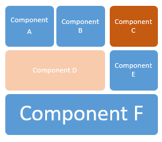

Generally speaking, in interactive objects (such as web panels, panels for SD, etc) events are actions handled by the program and triggered by the user. Events are usually local to the program where they are defined. In contrast, global events allow defining events global to all the components of an application. A web page (as well as a Smart Device screen) is made up of several components, so the idea is to have every component communicate with each other. Local events are triggered in response to a user action (who may interact with the software by way of, for example, keystrokes on the keyboard); on the other hand, global events are code that remains idle until it is invoked from another event (from any other component). For example, if a user enters an invoice, or receives a notification of some action, another panel of the same screen may react to that action (it can print the invoice, or refresh the related data). Then, the components that constitute a screen can be nested in a very complex way and local events are local to each component. Through global events, all the components of the screen can interact with each other because events can be invoked from any component. Info: In summary, a global event can be called from any component, regardless of the component where it was defined.
ExampleFor example, In the picture below, a global event defined in "Component E" could be invoked from "Component A" or vice-versa. Any combination is possible, regardless of the nesting level of the components that form the screen.  Note: Unlike user-defined events, which do not accept parameters, global events do.
ImplementationThey are implemented through the GlobalEvents external object. See HowTo: Using Global Events in Smart Device applications and HowTo: Using Global Events in Web Objects Scope
Notes
AvailabilityThis feature is available as of GeneXus 15.
|